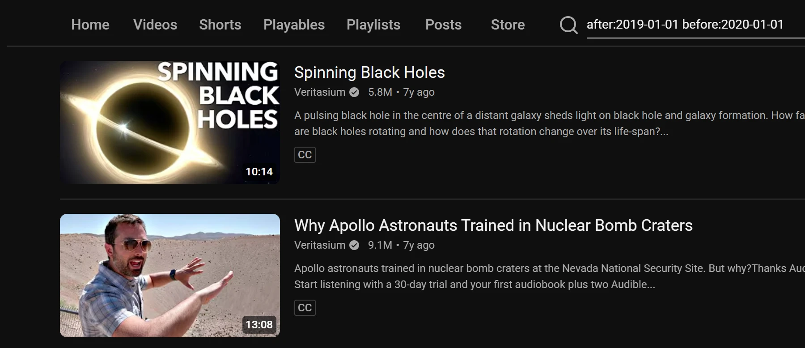

Guide 23·Channels
How to find a YouTube channel's videos from one year.
Updated 19 November 2026
Short answer
Open the channel, click the magnifying glass at the end of its tabs, and type a date range: after:2019-01-01 before:2020-01-01 lists only what it uploaded in 2019. YouTube doesn't mention it anywhere, but its search takes those dates, and in a channel's own search box they only search that channel. The Videos tab itself only sorts Latest, Popular or Oldest. To put a year in order, or narrow it by length and views, use Needle, a free Chrome extension, on the same channel.
01·On YouTube
What the Videos tab can do
Open a channel's Videos tab and the chips above the grid sort it three ways: Latest, Popular and Oldest. On channels that have members-only videos the first chip is a menu with those three in it, next to chips for Members only and Public.
None of them goes to a year. To reach 2019 on a channel that has posted every week since, you pick Oldest or Latest and scroll, and the page loads about 30 videos at a time.
02·By date
Search the channel by date
YouTube's search understands two words it doesn't advertise, after: and before:, and a channel's own search box understands them too.
- Open the channel and click the magnifying glass at the end of its tabs, after Home, Videos, Shorts and the rest.
- Type a range with full dates, like
after:2019-01-01 before:2020-01-01, and press Enter.

Checked on Veritasium for this guide, every result whose date we looked up went up in 2019. Worth knowing before you try it:
- Write the dates in full.
after:2019 before:2020found nothing. The same range asafter:2019-01-01 before:2020-01-01worked. - One side is enough.
before:2015-01-01is everything the channel posted up to the end of 2014. - It isn't in date order. Results come in the search's own order, December next to January, and there's no sort for them.
- The main search bar takes it too, with the channel's name in front:
veritasium after:2019-01-01 before:2020-01-01. Other channels can creep in there.
03·With Needle
Sort and filter by date with Needle
The channel's search finds a year. It can't put it in order, keep only the long ones, or leave out what you've seen. Needle reads every upload on the channel into one list that can.
- Open the channel's Videos tab.
- Press the needle button in the bottom right corner, or Alt+Y.
- Set Sort to Oldest first or Newest first.
- Pick a range under + Date, from Past week to Over a year ago, or Custom… for your own, or type one into the panel's box.
before:2013 | Uploaded before 2013 |
after:2025 | Uploaded since the start of 2025 |
after:2025 >20m | Since 2025, and over 20 minutes |
before:2015 >500k | Older videos with over 500K views |
after:2024 unwatched | Since 2024, and not started yet |
The line above the grid adds up what's left: how many videos, their total length, their views.
04·How exact
How exact Needle's dates are
Needle goes by the age YouTube prints under each video, like 3 weeks ago or 7 years ago. For this year's uploads that's within days or weeks. For older ones it's a count of years, so every video labelled 7 years ago counts as seven years before today, whichever month it went up, and a filter on an old year can take in a few months either side.
So for one exact year, use the channel's search above. For sorting, combining dates with length or views, and anything recent, use the panel.
05·Each year's best
Each year's best
Start here, in the same Sort menu, is another way through a channel's years. It puts first the three videos from each year that drew the most views per day, so the top of the list is the channel's best work from every year rather than a wall of its oldest hits. >10m on top keeps it to the longer ones.
Searching the channel by a word instead? How to search every video on a channel. For its longest uploads, sort it by length, and for the first thing it ever posted, how to find a channel's first video.
06·Questions
Questions?
Can you filter a YouTube channel by year?
Not with a button. The Videos tab sorts by Latest, Popular or Oldest and nothing else. The channel's search box takes dates, though: after:2019-01-01 before:2020-01-01 lists what it uploaded in 2019.
Why does after:2019 before:2020 find nothing?
In a channel's search, a year on its own didn't work in a range when checked in November 2026. Written as full dates, 2019-01-01 and 2020-01-01, the same range worked. before:2013 on its own did work.
Does it work in YouTube's main search bar?
Yes. Put the channel's name first: veritasium after:2019-01-01 before:2020-01-01. Videos from other channels can turn up there, so the channel's own search box is the tidier way.
Why aren't the results in date order?
The search puts them in its own order, not by date, and there's no sort for them. Needle's panel puts a channel oldest or newest first, and keeps the date filter on top.
Does the Oldest chip show a channel's first video?
Its oldest regular video. Shorts and past live streams have tabs of their own, so the very first thing a channel posted can be on one of those.
How exact is Needle's date filter?
As exact as YouTube's labels. Needle goes by the age YouTube prints under each video, like 3 weeks ago or 7 years ago, so for recent uploads it's close, and for old ones a year filter can be off by a few months. For an exact year, use the channel's search with full dates.
Is it free?
Yes. No account, no trial, no paid tier.